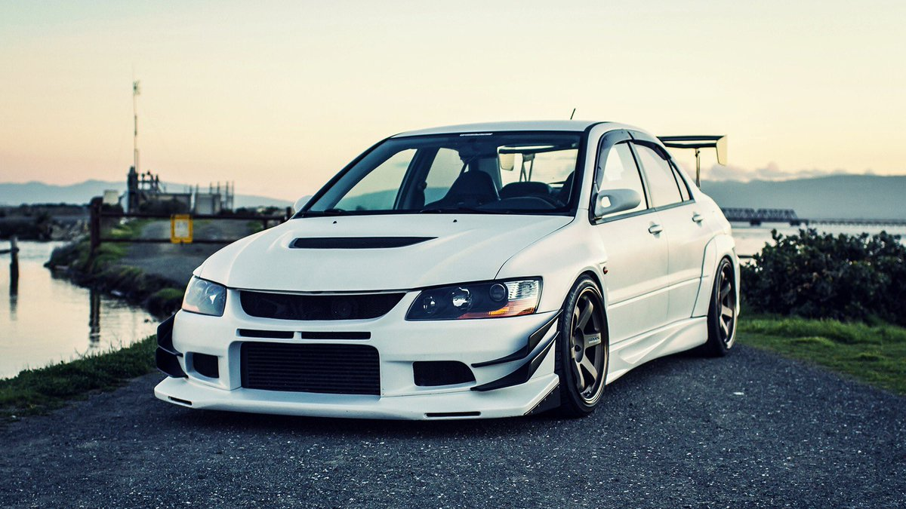

Ce este tuning-ul?
|  | Tuningul mașinii este modificarea unei mașini pentru a o optimiza pentru un set diferit de cerințe de performanță față de cele pentru care a fost proiectat inițial să le îndeplinească. Cel mai frecvent, aceasta este o performanță mai mare a motorului și caracteristici de manevrabilitate dinamică, dar mașinile pot fi, de asemenea, modificate pentru a oferi o economie de combustibil mai bună sau un răspuns mai lin. Scopul reglajului este îmbunătățirea performanței generale a unui vehicul ca răspuns la nevoile utilizatorului. Adesea, reglarea se face în detrimentul performanței emisiilor, fiabilității componentelor și confortului ocupanților.
|